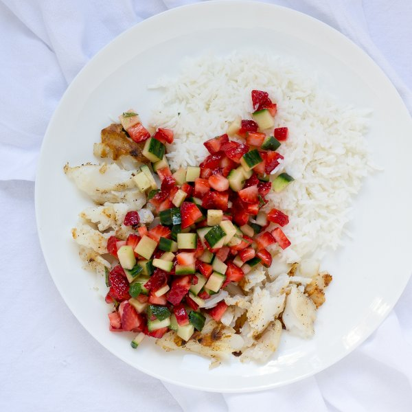

Grilled Fish & Basmati Rice with Strawberry, Cucumber & Mint Salsa

Prep Time
35 min
Nutrition (per serving)
460.3 kcalCalories
30.9 gProtein
50.2 gCarbs
15 gFat
Full nutrition table
| Calories | 460.3 kcal |
| Total fat | 15 g |
| Saturated fat | 2.2 g |
| Trans fat | 0 g |
| Cholesterol | 80 mg |
| Sodium | 523.5 mg |
| Carbohydrates | 50.2 g |
| Fiber | 4.4 g |
| Sugars | 7.3 g |
| Protein | 30.9 g |
| Potassium | 781.9 mg |
| Calcium | 74.5 mg |
| Iron | 3.9 mg |
| Vitamin A | 107 IU |
| Vitamin C | 74.4 mg |
| Vitamin D | 34 IU |
Cookware
Ingredients
- 1 cupbasmati rice
- 1 ½ lbcod fillet
- 1English cucumber
- 1 small pkgfresh mint
- 1lemon
- 1 (16 oz) pkgstrawberries
- black pepper
- extra virgin olive oil
- salt
Steps
- Rinse the rice in a colander and transfer to a small saucepan. Add water and salt; cover and bring to a boil.1 cup basmati rice
2 cups water
½ tsp salt - While the water comes to a boil, wash and dry the fresh produce.1 (16 oz) pkg strawberries
1 English cucumber
1 small pkg fresh mint
1 lemon - Once the water is boiling, reduce the heat to low and cook the rice until the liquid is absorbed, 15 to 18 minutes. Once done, remove the saucepan from the heat and let the rice stand, covered, for 5 minutes.
- Trim and discard the stem ends of the strawberries; small dice the strawberries and transfer to a medium bowl.
- Trim and discard the ends of the cucumber; small dice the cucumber and add to the bowl.
- Pick the mint leaves off the stems; discard the stems and roughly chop the leaves. Add to the bowl.
- Preheat a grill pan or skillet over medium heat.
- Juice the lemon into a small bowl.
- Place the fish fillets on a plate and season with salt and pepper, then drizzle with ½ of the lemon juice (save the rest for the salsa) and olive oil.1 ½ lb cod fillets
½ tsp salt
½ tsp black pepper
2 tbsp extra virgin olive oil - Place the fish on the grill pan or skillet; cook until the fish is opaque in the center, 2 to 4 minutes per side. Once done, transfer to a plate.
- While the fish cooks, add the remaining lemon juice, olive oil, salt, and pepper to the salsa; mix well.2 tbsp extra virgin olive oil
½ tsp salt
½ tsp black pepper - Uncover the rice and fluff with a fork.
- To serve, place the rice and fish on a plate and spoon the salsa over top. Enjoy!